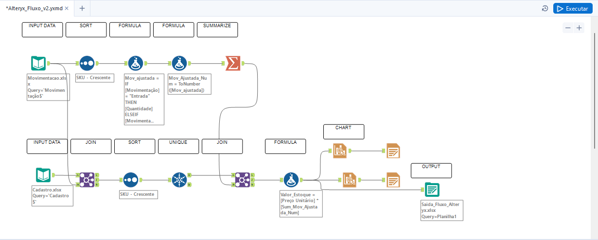

Projeto_Alteryx
📊 Projeto de Análise de Movimentações de Produtos com Alteryx
Este projeto foi desenvolvido com o objetivo de praticar habilidades em preparação, transformação e visualização de dados utilizando o Alteryx Designer. Para isso, foram criadas duas bases fictícias e um fluxo completo que simula o acompanhamento de movimentações de produtos em diferentes armazéns.
🗂️ Bases de Dados Utilizadas
1. Cadastro
Contém informações básicas sobre os produtos:
- SKU: Identificador único do produto
- Nome do Produto
- Categoria
- Preço Unitário
2. Movimentações
Registra eventos de entrada e saída de produtos:
- SKU
- Data
- Quantidade
- Movimentação: Entrada ou Saída
- Armazém
🔧 Etapas do Fluxo no Alteryx
O fluxo foi construído em duas subdivisões a partir da entrada de dados:
- 📥 Input Data
Importação das duas bases: cadastro de produtos e movimentações.
PARTE 1:
A partir da base Movimentação:
- 🔃 Sort Tool - Ordenação dos dados por SKU de maneira crescente.
- 🧮 Formula Tool - Criação de coluna calculada "Mov_Ajustada" com condição para entradas positivas e saídas negativas.
- 🧮 Formula Tool - Criação da coluna "Mov_Ajustada_Num", convertendo valores para números.
- 📊 Summarize Tool - Agrupamento por produto somando "Mov_Ajustada_Num" para saldo final de estoque.
PARTE 2:
A partir da base Cadastro:
- 🔗 Join Tool - Combinação via campo SKU.
- 🔃 Sort Tool - Ordenação por SKU.
- 🧹 Unique Tool - Filtragem de duplicados.
- 🔗 Join Tool - Junção com os dados do Summarize.
- 🧮 Formula Tool - Criação da coluna "Valor_Estoque" (quantidade × preço unitário).
- 📤 Output Data - Exportação para Excel.
Visualizações adicionais:
- 📈 Charting Tool - Valor do estoque por armazém
- 📈 Charting Tool - Valor do estoque por SKU
🧠 Aprendizados
Como utilizei bases fictícias para praticar o uso do Alteryx, foquei nas etapas técnicas:
- Integração de múltiplas fontes de dados
- Aplicação de lógica condicional e cálculos personalizados
- Criação de gráficos simples dentro do Alteryx
- Exportação de resultados para uso externo
🖼️ Imagem do Fluxo
Abaixo está o fluxo criado no Alteryx Designer:
